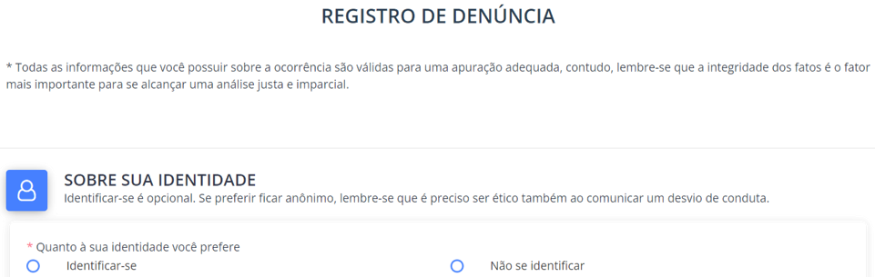

4. Como deve ser uma denuncia?
Percorra o caminho para conhecer os detalhes necessários para você registrar uma denúncia com consistência suficiente para uma adequada apuração dos fatos.
Clique sobre cada um dos ícones ao lado.

Registrar
Após clicar sobre o botão de “Registrar”, acesse o formulário disponível e preencha o formulário com as informações solicitadas. Após preencher todos os dados, clique sobre o botão de processar o formulário e lhe será fornecido o número do protocolo, semelhante ao exemplo abaixo.
Canal de Denúncias | Treinamento online